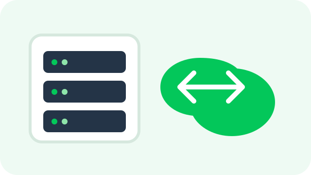

☁️인프라
GamjaBox
개인 Proxmox 서버 위에서 VM 생성, SSH 접속, 포트 노출과 접근 제어를 자동화한 셀프호스팅 IaaS 서비스입니다.
개발 프로젝트도 제 취향 중 하나입니다. 필요한 것이 없거나 구조가 궁금하면 직접 만들어보는 편입니다.

개인 Proxmox 서버 위에서 VM 생성, SSH 접속, 포트 노출과 접근 제어를 자동화한 셀프호스팅 IaaS 서비스입니다.
환경 보호 활동을 기록하고 사용자끼리 소통할 수 있도록 실시간 채팅과 알림 기능을 구현한 팀 프로젝트입니다.
행사 정보를 모아 보여주고 사용자의 관심사를 바탕으로 어울리는 행사를 추천하는 플랫폼입니다.
동아리 운영 중 반복되던 수기 출석 확인과 누락 문제를 줄이기 위해 직접 만든 내부 관리 도구입니다.
다른 키워드나 분류를 선택해 보세요.